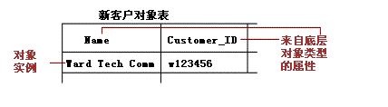
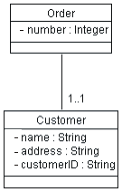

| 指南：正向设计关系数据库 |
 |
|
简介本指南描述用于将设计模型中的永久设计类映射为数据模型中的表的方法。 将设计模型元素转换为数据模型元素设计模型中的永久类可以转换为数据模型中的表。下表显示了设计模型元素和数据模型元素之间的映射的摘要。
将永久类映射为表设计模型中的永久类代表系统必须存储的信息。从概念上说，这些类可能类似一个关系设计。（例如，设计模型中的类可能以某种方式反映为关系模式中的实体。）当一个项目从精化阶段移到构造阶段时，设计模型和关系数据模型的目标就偏离了。发生这种偏离是因为关系数据库开发的目标是规范化数据，而设计模型的目标是概括日益复杂的行为。这两方面（数据和行为）的偏离导致需要在这两个模型的相关元素之间映射。 在以第三标准格式编写的关系数据库中，表中的每行（每个“元组”）都被视为一个对象。 表中的列相当于类的永久属性。（请记住，永久类可能有瞬态属性。）因此，在与其他类没有任何关联的简单情况下，这两个世界之间的映射是简单的。该属性的数据类型对应于列所允许的数据类型之一。 示例 以下类 Customer：
当在 RDBMS 中建模时，将转换为称为 Customer 的表，并具有 Customer_ID、Name 和 Address 这几列。 此表的一个实例可以显现为：  永久属性和键对于每个永久属性，必须询问一些问题才能得出将在关系数据模型中用于相应地对持久对象建模的附加信息。例如：
将持久对象之间的关联映射为数据模型两个持久对象之间的关联是作为相关联对象的外键来实现的。外键是一个表中的一列，包含相关联对象的主键值。 示例： 假设 Order 与 Customer 之间有以下关联：  当这映射为关系表时，就生成一个 Order 表和一个 Customer 表。Order 表包含了多个列，分别表示不同的属性，另外有一列叫做 Customer_ID，是对 Customer 表中相关行的主键的外键引用。对于给定的 Order，Customer_ID 列包含该 Order 相关联的 Customer 的标识。外键使 RDBMS 能够将相关的信息连接在一起。 将聚集关联映射为数据模型聚集也使用外键关系来建模。 示例： 假设 Order 与 Line Item 之间有以下关联：
当这映射为关系表时，就生成一个 Order 表和一个 Line_Item 表。Line_Item 表列出属性的列，以及一个名为 Order_ID 的附加列，它包含一个外键，该外键引用 Order 表中相关联的行。对于给定的 Line Item，Order_ID 列包含该 Line Item 相关联的 Order 表的 Order_ID。外键允许 RDBMS 优化连接操作。 此外，实施在数据模型中提供引用完整性的级联删除约束是很重要的。一旦完成了该操作，只要删除 Order，它们的所有 Line Item 也会被删除。 在数据模型中对泛化关系建模标准的关系数据模型不直接支持对继承关系建模。可以使用多个策略来对继承关系建模。它们可归纳如下：
在数据模型中对多对多关联建模关系建模中的一项标准技术是使用交叉实体来表示多对多关联。 这里可以应用同一方法：交叉表用于代表该关联。 示例： 如果 Supplier 可以提供许多 Product，并且一个 Product 可以由许多 Supplier 提供，则解决方案就是创建一个 Supplier/Product 表。此表将仅包含 Supplier 表和 Product 表的主键，并用于链接 Supplier 及其相关的 Product。对象模型中没有类似于此表的东西；它限用于代表关系数据模型中的关联。 优化数据模型一旦这些设计类转换为数据模型中的表和相应的关系，则按需要优化该模型以实施引用完整性，并通过视图和存储过程优化数据访问。关于更多信息，请参阅指南：数据模型。 正向设计数据模型多数应用设计工具都支持从数据模型生成数据定义语言（DDL）脚本和／或从数据模型生成数据库。数据库的正向设计需要作为整体应用程序开发和集成任务的一部分进行计划。从数据模型正向设计数据库的计时和频率取决于具体的项目情况。对于创建新数据库的新应用程序开发项目，初始正向设计可能需要在精化阶段结束时作为实施该应用程序的稳定体系结构版本的一部分工作来完成。在其他情况下，初始正向设计可以在构造阶段的早期迭代中完成。 数据模型中可以正向设计的模型元素的类型因该项目中使用的具体设计工具和 RDBMS 而异。一般来说，数据模型的主要结构元素（包括表、视图、存储过程、触发器和索引）可以正向设计到数据库中。 |


© Copyright IBM Corp. 1987, 2006. All Rights Reserved. |